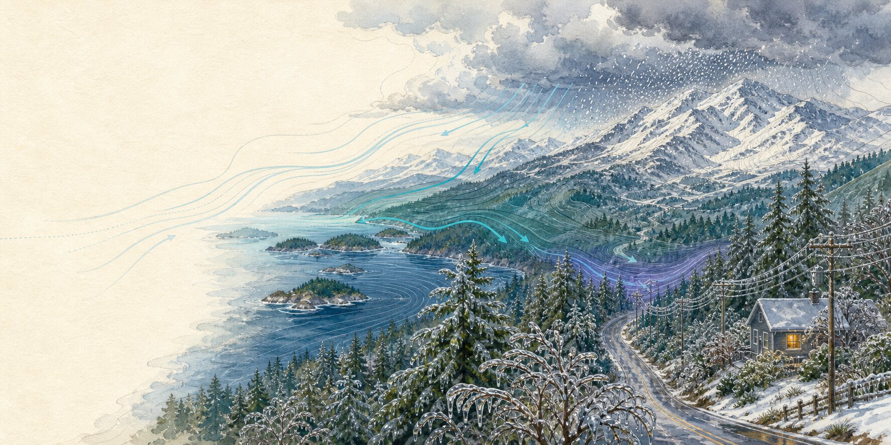
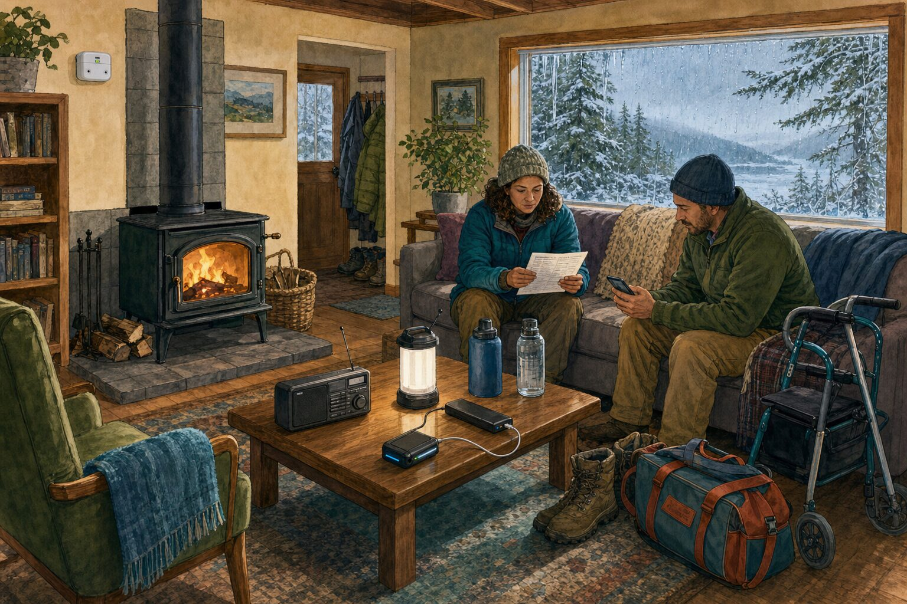
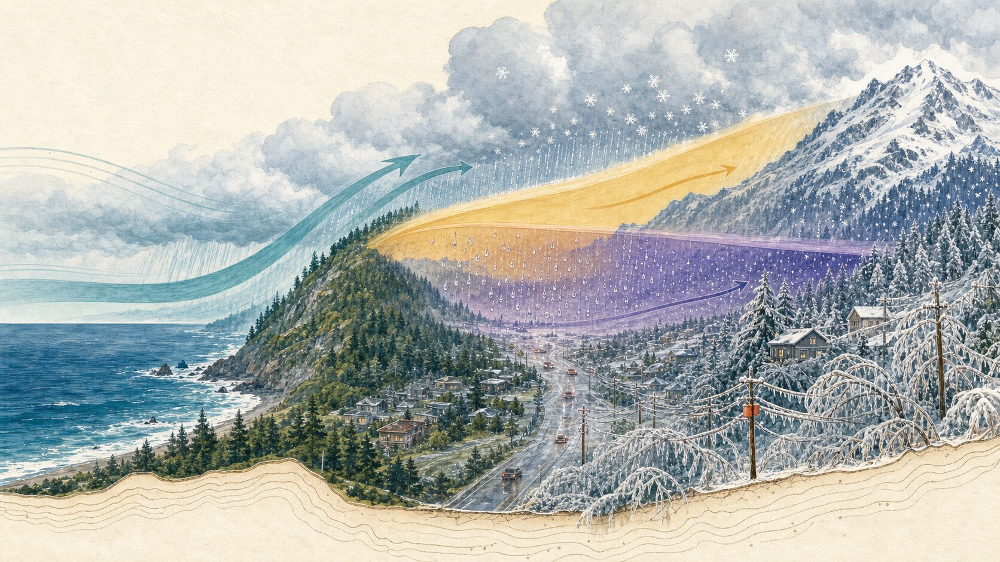

Chapter four · Winter Storm
Winter Storm
Cold becomes a household problem through heat, roads, water, communication, and power. The plan is measured in safe warmth and usable time.
Washington, Oregon, and British Columbia · Snow, ice, wind, cold, and outages vary sharply by elevation and place · Reviewed July 12, 2026
If the power is out or the house is getting coldImmediate reference
If the storm or outage is affecting you now.
-
Fresh air first
CO alarm or possible exposure
Move everyone and animals into fresh air and call 911 or the local emergency service. Do not search for the source first.
-
Move only on a safe route
Safe heat or essential power will not last
Check the current weather and route. If officials say travel is safe, begin the tested backup or relocation plan before conditions worsen. If the household is becoming unsafe and travel is unsafe, call 911 or the local emergency service.
-
Keep distance
Downed lines, loaded trees, or a closed road
Stay away and report the hazard. Do not clear branches near lines or drive around a closure. Check neighbors remotely first.
Use only equipment approved for indoor heating. Never use a gas range or oven, grill, charcoal device, camp stove, outdoor heater, engine, or vehicle for indoor heat. Run a portable generator outdoors at least 20 ft / 6 m from every building, door, window, and vent, with exhaust pointed away.
Open official weather, road, ferry, and utility sources Read the complete winter storm quick reference
When the hum disappears
A quiet house begins keeping several clocks.
Composite household: Mira and Niko are fictional. Their inlet road, apartment limits, walker, medication, and outage plan combine ordinary regional circumstances with established guidance.
Mira lives above a small inlet where the road passes beneath alder, bigleaf maple, and Douglas-fir before reaching the ferry. Her longtime friend Niko lives nearby and uses a walker. His apartment has electric heat and an elevator. Her house has a professionally installed stove, but the well pump, refrigerator, lights, and most communication still depend on the grid.
The forecast describes freezing rain and damaging wind. Nothing has failed yet. Mira and Niko have talked about outages before, but they have never written the plan down. Niko comes over in the afternoon, while current weather and route sources show that travel is still safe and the ferry is running. He brings medication, dry clothes, and the charger for his phone. Mira calls the pharmacist about one refrigerated medicine. As they fill drinking-water containers and test the smoke and carbon-monoxide alarms, they discover that one power bank is only half charged.
After dark, ice begins ticking against the windows like sand. The wind changes. Branches strain and release somewhere beyond the porch light. Then the electrical hum disappears: refrigerator, wall heater, well pump, and the small clock on the range all stop at once.
They choose the living room because the installed stove and alarms are there. They close doors without covering an exit, flue, vent, or required appliance clearance, then bring in the radio and medication. The half-charged power bank is reserved for Niko’s phone. Boots and a small bag stay by the clear doorway. Nobody has to walk under the trees to prove that a neighbor cares.

They do not know whether the outage will last two hours or two days. An outage estimate, when it appears, will not be a promise. Instead they watch the clocks they can use: the room temperature, the charge remaining in essential devices, medication instructions, the condition of the road, and the amount of safe heat and water they can maintain.
They send the check-in message they had discussed with a nearby household. A missed reply starts the agreed contact chain; it does not send them under the trees. They call emergency services only if there is reason to believe someone is in immediate danger, and they do not cross a closed or hazardous route. Care does not require entering the danger someone else is trying to survive.
A neighbor agreement extends a household without pretending every road is passable.
Pacific moisture, temperature, wind, and terrain
A winter storm is made of layers.
The same regional system can produce rain along one shoreline, freezing rain in a valley, snow on a pass, and damaging wind across an island or exposed ridge.

- Moisture and terrain
-
Pacific air changes as it crosses the land.
Ridges, valleys, passes, shorelines, islands, and the Columbia Gorge can alter wind and precipitation over short distances.
- Temperature layers
-
What falls depends on the full column of air.
Snow can melt through a warm layer, enter shallow cold air, then freeze on contact. A colder column keeps precipitation as snow.
- Load and wind
-
Weight turns weather into infrastructure trouble.
Wet snow and glaze load trees and lines. Wind adds movement; saturated soil can weaken root support and connect the storm to outages, flooding, and landslides.
The forecast, the road, the battery, and the room do not run together.
A regional alert can orient a household, but the next decision depends on the issuing agency, the local route, the building, and what the people inside cannot safely lose.
In the United States, National Weather Service Watches mean prepare, Advisories mean use caution, and Warnings mean take action; the exact criteria are local. In Canada, Environment and Climate Change Canada uses Warnings, Advisories, and Watches together with yellow, orange, or red impact colours. Warnings and Advisories call for action; Watches mean get ready for potential severe weather. Keep the issuer, affected area, timing, and instructions attached to the alert instead of reducing it to a colour or screenshot.
A point wind observation is not a continuous field. Forecast-model guidance smooths terrain. Neither can predict that a particular tree will fall, a road will close, or a circuit will fail. The Atlas separates observed wind from forecast wind and keeps its terrain limits visible; it is an orientation tool, not a replacement for weather, road, ferry, utility, or emergency sources.
Inside the house, time may be easier to measure. A refrigerator generally keeps food cold for about four hours if unopened. A full freezer may hold temperature for about 48 hours, and a half-full freezer about 24, but thermometers and current public-health guidance decide what remains safe. Those food limits do not apply to medicine. Follow its label and the instructions of a pharmacist or clinician; follow the manufacturer or device supplier for medical equipment. Decide when to ask for help or relocate before essential backup is nearly exhausted.
Safe warmth is a household capability, not a particular appliance.
A renter in an apartment, a homeowner with a woodstove, a household on a well, and someone who depends on an elevator or powered medical equipment need different plans. The useful question is what each household can still do safely.
Choose the warmest safe room that does not block exits, vents, flues, or appliance clearances. Add dry layers, blankets, sleeping bags, and draft reduction that leaves combustion air and exhaust paths open. Use only heating equipment approved for indoor use, installed where required, and operated exactly as the label and local code direct. Test smoke and carbon-monoxide alarms.
Portable generators remain outside at least 20 ft / 6 m from every building and opening, with exhaust pointed away. They never run in a garage, carport, porch, basement, or partly enclosed space. A portable generator is never connected through a household outlet; transfer equipment belongs to qualified professionals. Any household that depends on electric medical or mobility equipment needs a tested backup and a destination that does not assume continuous service or first-restored power.
Water belongs in the same plan as heat. Municipal service and private wells respond differently to outages. Include drinking, sanitation, medication, pets, service animals, and livestock, and build toward the storage guidance used by the local authority rather than one universal regional quantity. People in apartments should include elevators, electronic entry, stair access, and the building’s emergency plan.
Travel is a household decision before it becomes a road problem. Save the weather, road, ferry, transit, emergency-alert, and utility sources that apply to the route. Delay travel when instructed. Never drive around a closure. If stranded in winter conditions, generally remain with the vehicle unless it is unsafe, keep the tailpipe clear when operating the engine, and follow emergency instructions.
After the weather passes, lines can remain energized, branches loaded, food unsafe, and heating or water systems damaged. Stay away from every downed line and anything touching it. Report the hazard. Let utilities, landlords, qualified technicians, plumbers, and arborists handle systems and trees that exceed the household’s safe role.
- Which room can remain warm without blocking an exit, vent, flue, or required appliance clearance?
- What depends on power, how long will its tested backup last, and where can the household relocate before that time ends?
- How will water, food, medication, sanitation, pets, service animals, wells, or livestock remain safe?
- Which weather, road, ferry, alert, utility, and outage-reporting sources apply to this exact place?
- Can everyone reach a confirmed heated destination before ice, snow, closures, or elevator loss narrows the options?
- Who will text or call, who can safely share warmth or charging, and when is the route too hazardous for an in-person check?
Start with the capability whose loss would create the earliest danger. Continue with household capabilities →
Preparedness leaves room for an ordinary evening.
It may be tea warming slowly, a radio used only long enough to hear the alert, a book in the pool of an LED lantern, or a familiar game played while ice works on the trees. Calm does not come from believing the grid cannot fail. It comes from knowing which clocks matter and what the household will do before one runs out.
No household has to become a private utility. The plan can be modest: one safe room, working alarms, a way to leave early, a little more stored water, a power bank that has actually been tested, and a neighbor agreement made while the road is clear.
Keep this part close
Winter storm quick reference.
Follow the issuing weather, road, ferry, emergency, and utility source for your exact location. A blank regional view is not an all-clear.
Warmth and carbon monoxide
- CO alarm or possible exposure: fresh air first, then emergency services.
- Use only indoor-approved heat, with required installation, ventilation, and clearances.
- Never use a gas range or oven, grill, camp stove, engine, or vehicle for indoor heat.
- Run generators outdoors at least 20 ft / 6 m from buildings and openings.
Power, medicine, and travel
- Begin tested backup before essential power or safe heat runs low. Relocate only when officials say the route is safe; call emergency services if the household is becoming unsafe and travel is unsafe.
- Keep refrigerator and freezer doors closed; use thermometers and health guidance.
- Delay travel when instructed and never drive around a closure.
- Check neighbors remotely first; do not cross a hazardous route.
When weather has passed
- Stay away from downed lines and anything touching them.
- Do not clear storm-loaded trees near utility lines.
- Restart heat, water, and electrical systems cautiously with qualified help.
- Record which heat, power, water, transport, or communication assumption failed.
Sources and limits
The issuing agency for your place comes first.
Alert terminology, building systems, utility procedures, roads, ferries, warming locations, medical-device instructions, and emergency channels vary by place. Follow the current issuing agency.
The site does not display a complete regional winter-alert, road, ferry, or outage feed. Observed and forecast wind cannot determine whether a particular tree, line, road, or circuit will fail.
If you need the alert, emergency, road, ferry, weather, or public-support source for a place, Signals can help you find the responsible publisher.
Reviewed July 12, 2026
Weather and health
- National Weather Service: Winter weather warnings, watches, and advisories
- CDC: Protect yourself during a power outage
- U.S. CPSC: Carbon monoxide and portable-generator safety
- Environment and Climate Change Canada: Weather and alerts
- Environment and Climate Change Canada: Weather alert types and impact colours
- Government of Canada: Prepare for winter storms
- Government of Canada: Prepare for power outages, medical needs, and carbon monoxide